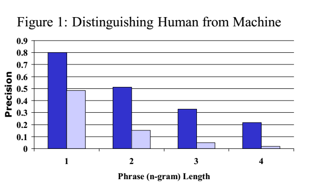
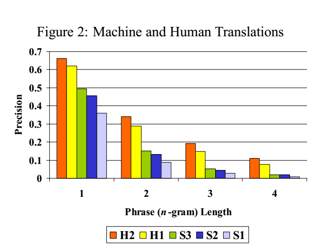
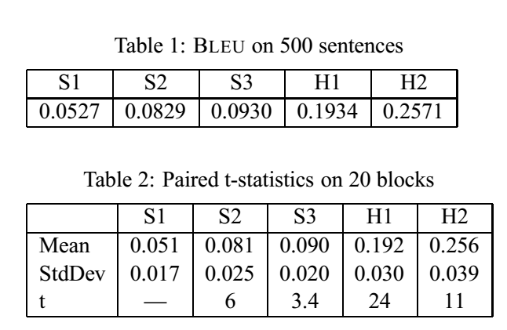
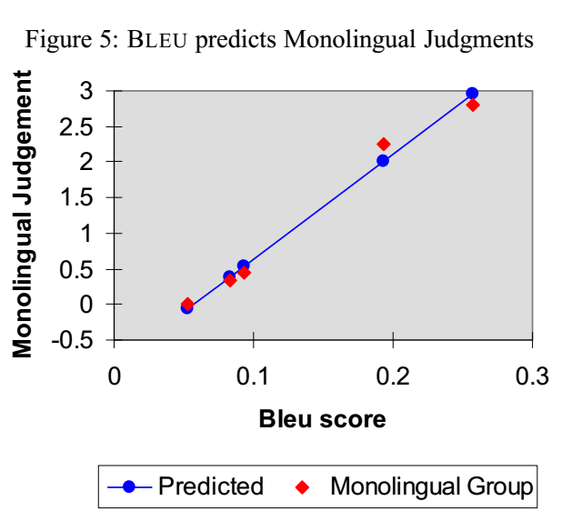
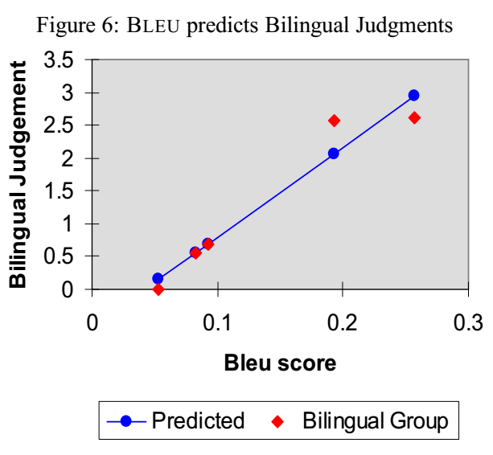
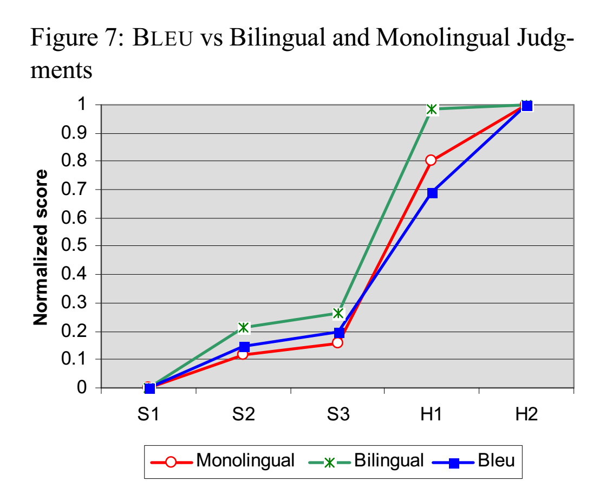

论文地址：https://www.aclweb.org/anthology/P02-1040.pdf
这篇文章大概是MT领域非常著名的一篇文章了，因为它提出了一种根据参考翻译为机器翻译质量打分的方法（BLEU值），直到现在还在被广泛使用。
基本思路
BLEU评价翻译水平的基本假设是这样的：机器翻译越接近人类翻译，机器翻译的质量就越高。因此，在这一前提下，需要量化机器翻译与人类翻译的相似程度。经过观察可以发现，一个较好的机器翻译和人工翻译中相同的词和短语比较多；因此可以通过比较机器翻译和人工翻译中相同n-gram的数量来评价一个机器翻译。因此令表示改进的n-gram精度（modified n-gram precision）：
其中的意思是，对于某一个在机器翻译结果中出现的n-gram，它被统计的数量不超过该n-gram在某一个参考翻译中出现的总数量。这样可以防止出现机器翻译大量重复参考翻译中出现的某个词，结果却会得到较高分数的情况。

此时可以看出，这一评分方法可以区分人类和机器翻译了，且n越大，得分的差异越大。

此时可以看出，这一评分方法也可以在较细粒度上区分人类和机器翻译。
改进：组合多种n-gram的得分
可以看出，n-gram分数大致随n的增加指数衰减，所以对的对数做加权平均是比较好的。实验得出，取时得到的评测结果最为接近。
改进：短句惩罚
很显然上面的做法已经惩罚了过长的句子和被使用太多次的词，但是并没有考虑到句子太短的情况。只考虑精度可能会使得短句得到非常高的分数。但是考虑召回率又可能会使得事情变得过于复杂。所以直接考虑机器翻译和参考翻译的长度。对于每个机器翻译得到的句子，在（可能有多个的）参考翻译中找到与它长度最为接近的句子，称其长度为最佳匹配长度（best match length）。然后计算出整体语料的机器翻译最佳匹配长度之和，称为；令是机器翻译结果的总长度，定义短句惩罚（brevity penalty）为
将这个因子乘到BLEU分数上：
即
测试
在测试中，取，（也就是直接平均）。
作者首先回答了这样几个问题：
- （不同机器/人类翻译）BLEU值的差异是可信的吗？
- （不同机器/人类翻译）BLEU值的差异是稳定的吗？
- BLEU值的方差是多少？

作者找了500个句子，每个各有4个参考翻译，首先让机器/人类分别翻译500个句子，分别计算其BLEU值；然后把这500个句子分成20组，分组计算BLEU值，并计算出平均值和标准差，并对不同系统翻译的结果进行结对T检验。即使只随机留下每个句子的一个参考翻译，BLEU值的排序也没有改变。这说明BLEU值的差异是可信和稳定的，且方差不是很大。
之后作者比较了BLEU评测和人类评测（之前对人类评测也做了一个结对T检验，虽然我并不知道有什么用）的结果。



可以看出，BLEU值和单语言评测者的打分比较相近，和多语言评测者的打分差别比较大。这可能是因为BLEU值只考虑了翻译结果的流利度等因素，不像多语言评测者那样，会考虑更多的语义方面的问题。
总结
这个评价方法主要考虑的是翻译结果和参考翻译之间的相似程度，用比较简单的方法得到了与人类评价相似的结果。不过我的问题是：
- 单纯用n-gram计数的比较是否过于简单，没有考虑参考翻译和机器翻译之间语义比较的问题？
- BLEU和单语言评测者比较接近大概是有原因的：这一评测方法完全依赖于参考翻译，完全没有管源句的结构之类的问题。不过我觉得只要能保证参考翻译是高质量的，这并不能说是一件坏事，这应该取决于MT的主要应用场景。